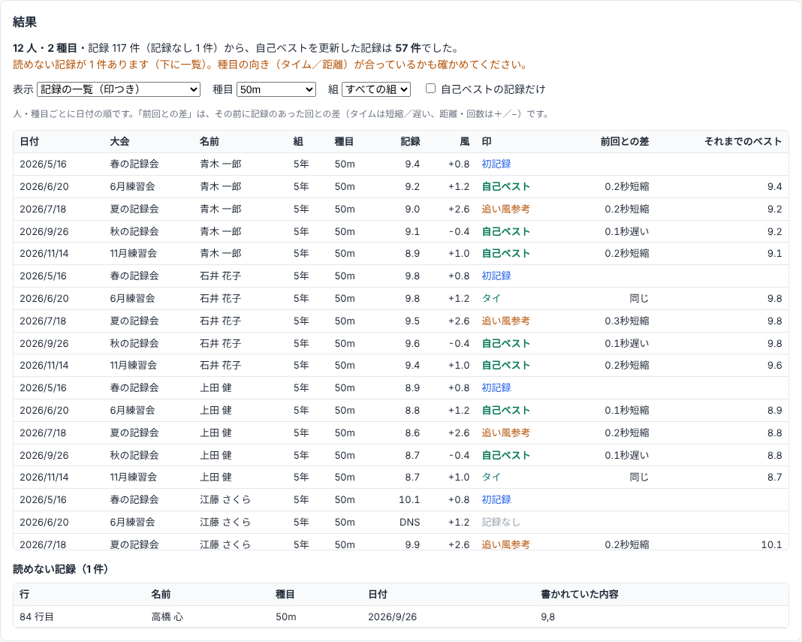

記録の自己ベストと伸び
陸上・水泳のクラブや部活、なわとび・体力テストなどの記録の一覧（日付・名前・種目・記録）から、1人ごと・種目ごとの自己ベストと出した日、初めからの伸び、前回との差を出し、自己ベストを更新した記録に印を付けるツールです。記録会のあとの振り返り、子どもや保護者に渡す記録カードづくりに使えます。
- 1人ごとの自己ベスト：種目ごとの自己ベストと出した日、初めの記録、最新の記録、更新した回数
- 記録の一覧に印：初記録・自己ベスト・タイ・追い風参考の印と、前回との差（0.2秒短縮、+0.15m など）
- その日に自己ベストを出した人：記録会ごとに、更新した人と伸びの一覧
- 1人1枚の記録カード：種目ごとの自己ベストと、これまでの記録（★＝更新）を切り取り線つきで印刷
ソフトのインストールは不要で、いつものブラウザで動きます。
お試し版はすべての機能を使えて、数えるのは表の先頭10人までです。決済が終わると、そのまま製品版の画面に移動します。ブックマークしておけば何度でも使えます。

見本のデータ（架空の名前と記録）で作った例です。
こんなときに
- 記録会のたびに記録を1行ずつ足していて、誰が自己ベストを出したかを目で探している
- 「12.34」「12秒34」「1:05.20」「1分05秒20」と書き方がばらばらで、Excel で並べ替えると順番がおかしくなる
- 追い風が強かった日の記録を、自己ベストから外して数えたい
- 年度の終わりに、1人ずつの自己ベストと伸びを紙にして渡したい
- 体力テストのように、1人1行に種目が横に並んだ表を、何回分か合わせて伸びを見たい
できること
- 読める表：①1行に1件の記録（日付・名前・種目・記録。風・組・大会名の列は任意）、②1行に1人で種目が横に並んだ表（体力テストの表など。日付の列があれば何回分でも）。種目の列がない表は、種目名を1つ入れて使えます
- タイムの書き方：12.34／12秒34／1:05.20／1分05秒20／1.05.20（分.秒.1/100秒）／2:10:30（時:分:秒）／1時間2分3秒。全角の数字も読みます
- 距離・回数の書き方：3m25／3.25m／325cm／45.3／120回 など
- 種目の向き：タイム（小さいほど良い）か、距離・高さ・回数（大きいほど良い）かを、種目名（跳・投・回数 など）と記録の書き方から推定し、種目ごとに直せます
- 記録なし：DNS・DNF・DQ・欠場・棄権・失格・ファウル・× などは記録なしとして数えません。読めない記録は、行の番号つきで一覧にします
- 追い風参考：「風」の列か、記録のうしろの「(+2.3)」から風を読み、決めた値（初めは 2.0m/s）を超える記録を「追い風参考」として自己ベストに入れません（チェックを外せば入れます）
- 名前・種目のそろえ方：「青木 一郎」と「青木一郎」、「100m」と「100ｍ」のような空白・全角半角の違いは同じものとして数えます
- 日付：2026/5/16、2026-05-16、令和8年5月16日、R8.5.16、Excel の日付のセル、年のない 5/16（年度の表なら1〜3月は次の年）。同じ日に何本か記録があるときは、元の表の順に数えます
- 印刷と保存：1人1枚の記録カード（A4 縦）、1人ごとの自己ベスト（A4 横）、選んだ日の更新者、種目ごとの自己ベスト順。種目・組で絞り込んで印刷できます。Excel ファイル（.xlsx）には1人ごと・記録の一覧・日ごと・種目ごとの順のシートが入ります。CSV でも保存できます
- CSV（UTF-8・Shift_JIS）と Excel ファイル（.xlsx）を読めます。Excel の表をコピーして貼り付けても使えます
できないこと（購入前にご確認ください）
- 記録の測定・入力の画面はありません。すでにある記録の表を読んで数えるだけです
- 公認記録かどうかの判定、大会の標準記録・新体力テストの得点表への当てはめはしません（追い風の基準の値だけを使います）
- 「50m自由形」と「自由形50m」のように、言葉の順番が違う種目名は別の種目になります。先にそろえてください
- 同じ名前の別の人は、組が違っても1人として数えます（名前に組や番号を付けて分けてください）
- 練習メニューや目標記録の提案はしません
- スマートフォンでは操作しにくいため、パソコンでお使いください
Excel だけで数えるなら
日付の順に並んだ表で、B 列が名前、C 列が種目、D 列が記録（秒の数字。例：9.4）なら、ある人の 50m の自己ベストは
=MINIFS(D:D,B:B,"青木 一郎",C:C,"50m")
です（距離・回数のように大きいほど良い種目は MAXIFS）。各行に「初」「更新」の印を付けるには、2行目に
=IF(COUNTIFS(B$1:B1,B2,C$1:C1,C2)=0,"初",IF(D2<MINIFS(D$1:D1,B$1:B1,B2,C$1:C1,C2),"更新",""))
と入れて下へコピーします（表計算ソフトで、初記録・更新・更新でない行を入れて確かめました）。MINIFS・MAXIFS は Excel 2019 以降と Microsoft 365 で使えます。
注意：この式は、記録が秒の数字で入っているときだけ正しく比べます。「1:05.20」「12秒34」「3m25」のような文字の記録はそのままでは比べられないので、秒や m の数字の列を別に作ってください。また、表が日付の順に並んでいないと「更新」の印がずれます。
このツールが向いているのは、記録の書き方がばらばら、種目が多い、追い風参考を外したい、1人ずつの記録カードまで作りたい、記録会のたびに同じ集計をする、といったときです。
よくある質問
| データはどこかに送られますか？ | 送られません。読み込み・集計・印刷・保存はすべてお使いのブラウザの中で行います。表示の選び方と風の設定だけをブラウザに保存し、名前や記録は保存しません。 |
|---|---|
| 「初めから」の伸びはどう出していますか？ | その人のその種目で最初に記録のあった回（初記録）から、自己ベストまでの差です。タイムは「0.5秒短縮」、距離・回数は「+0.25m」のように出します。 |
| 同じ記録を出したときは？ | それまでの自己ベストと同じ記録は「タイ」の印にし、更新の回数には入れません。種目ごとの自己ベスト順では、同じ記録の人を同じ順位にします。 |
| 何人まで使えますか？ | 製品版は人数・記録の数の制限はありません（2,000人×20回＝40,000件の記録を0.3秒ほどで集計できることを確かめています）。 |
安心してお使いいただくために
- 表はお使いのブラウザの中だけで処理し、サーバーには送信しません
- 動作環境：最新版の Chrome・Safari・Edge・Firefox（パソコン）
- 説明どおりに動かない場合は、ご購入から7日以内にご連絡いただければ返金します
練習の出欠から出席率を出すなら 出欠表の出席率の集計、総当たりの試合の順番を作るなら 総当たりの対戦表づくり、会費の未納を調べるなら 会費・月謝の納入状況の一覧 もあります。